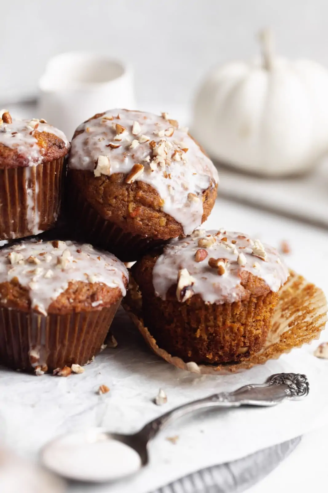

Pumpkin Carrot Cake Muffins Recipe

Description
Let’s show muffins a little appreciation! These pumpkin carrot cake muffins are super moist thanks to a healthy dose of pumpkin and perfectly spiced. You’ll love these fall muffins!
Ingredients
- 3/4 cup freshly shredded carrots
- 1/2 cup pumpkin puree
- 1/2 cup sweetened shredded coconut
- 1/4 cup raisins
- 3/4 cup granulated sugar
- 1/3 cup vegetable oil
- 2 eggs, room temperature
- 1 teaspoon vanilla extract
- 1 cup all purpose flour
- 1 teaspoon baking powder
- 1 teaspoons baking soda
- 2 teaspoons ground cinnamon
- 1/2 teaspoon ground nutmeg
- 1/4 teaspoon ground cloves
- 1/2 teaspoon salt
Method
- Preheat oven to 425°F and line 12 muffins with cupcake liners. Set aside.
- In a large bowl, combine carrots, pumpkin, coconut, raisins, granulated sugar, vegetable oil, eggs, and vanilla extract.
- In a separate bowl, combine flour, baking powder, baking soda, cinnamon, nutmeg, cloves, and salt.
- Incorporate dry ingredients into wet, stirring until just combined.
- Use 1/3 cup measure or a large ice cream scoop to divide the batter evenly between the 12 muffin tins.
- Bake for 5 minutes at 425°F. Reduce the heat to 375°F and bake for an additional 15 minutes or until a knife inserted into the middle comes out mostly clean.
- Allow the muffins to cool slightly. Enjoy!